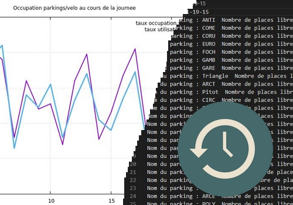
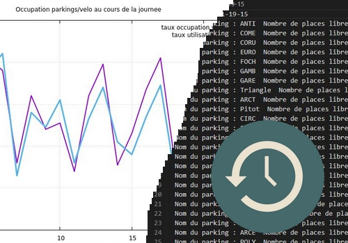
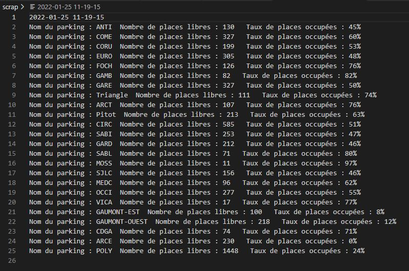

Pour voir l'historique des données relevées
Pour voir le graphique en temps réel des données relevées

Pour voir l'historique des données relevées |
Pour voir le graphique en temps réel des données relevées
|
Pour voir les données brutes relevées |